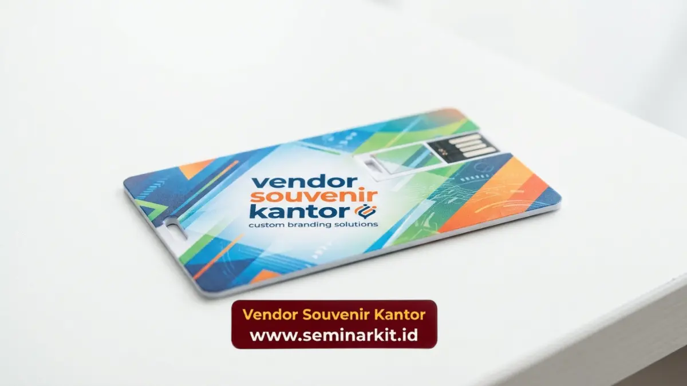

Custom corporate gift sesuai identitas brand dilakukan dengan menyelaraskan logo, warna korporat, tipografi, dan gaya desain perusahaan ke dalam produk fisik melalui teknik cetak, ukir, atau bordir yang presisi. Proses ini penting agar setiap hadiah yang diberikan tetap mencerminkan citra profesional perusahaan secara konsisten. Berikut langkah-langkah utamanya.
- Identitas brand mencakup logo, warna korporat, tipografi, dan gaya visual.
- Pemilihan teknik custom memengaruhi hasil akhir tampilan logo.
- Konsistensi warna penting untuk menjaga citra profesional perusahaan.
- Kemasan turut menjadi bagian dari representasi identitas brand.
- Uji sampel sebelum produksi massal membantu memastikan hasil sesuai ekspektasi.
Apa Saja Elemen Identitas Brand yang Perlu Diterapkan pada Corporate Gift?
Elemen identitas brand yang perlu diterapkan pada corporate gift meliputi logo perusahaan, palet warna korporat, tipografi khas, dan gaya visual yang konsisten dengan materi komunikasi perusahaan lainnya.
Logo Perusahaan
Logo menjadi elemen paling utama yang harus ditampilkan secara jelas dan proporsional pada produk, tanpa mengganggu fungsi atau estetika keseluruhan desain.
Palet Warna Korporat
Warna korporat sebaiknya diterapkan secara konsisten pada produk maupun kemasan, karena warna berperan penting dalam membangun brand recall di benak penerima hadiah.
Tipografi dan Elemen Visual Pendukung
Jika perusahaan memiliki tipografi khas atau elemen grafis tertentu, elemen ini dapat diintegrasikan pada detail produk seperti label, kartu ucapan, atau kemasan untuk memperkuat kesan identitas brand yang utuh.
Bagaimana Proses Custom Corporate Gift Dilakukan?
Proses custom corporate gift umumnya dimulai dari penyerahan brand guideline, pembuatan mockup desain, pemilihan teknik aplikasi logo, hingga uji sampel sebelum memasuki tahap produksi massal.

Penyerahan Brand Guideline
Perusahaan biasanya menyerahkan panduan visual brand, termasuk file logo resmi, kode warna, dan ketentuan penggunaan elemen visual, sebagai acuan dalam proses desain produk.
Pembuatan Mockup Desain
Berdasarkan brand guideline, tim desain akan membuat simulasi visual produk sebelum memasuki tahap produksi, sehingga perusahaan dapat melakukan revisi sebelum proses berlanjut.
Pemilihan Teknik Aplikasi Logo
Teknik seperti cetak digital, bordir, emboss, atau ukir laser dipilih berdasarkan jenis material produk dan tingkat detail logo yang perlu ditampilkan.
Uji Sampel Sebelum Produksi Massal
Sampel fisik dibuat terlebih dahulu untuk memastikan warna, ukuran, dan posisi logo sesuai dengan ekspektasi sebelum produksi dalam jumlah besar dilakukan.
Data industri merchandise menunjukkan bahwa produk dengan konsistensi identitas brand yang kuat memiliki tingkat brand recall hingga 30 persen lebih tinggi dibandingkan produk tanpa elemen branding yang jelas (sumber: analisis tren branding merchandise korporat, 2025).
Bagaimana Memastikan Konsistensi Identitas Brand pada Setiap Produk?
Konsistensi identitas brand dapat dipastikan melalui quality control ketat pada setiap batch produksi, penggunaan file desain standar, serta komunikasi berkelanjutan antara tim brand perusahaan dan tim produksi.
Pemeriksaan berkala terhadap warna, ukuran logo, dan kualitas material pada setiap tahap produksi membantu menghindari perbedaan hasil antar unit, terutama untuk pesanan dalam jumlah besar.
Custom corporate gift yang selaras dengan identitas brand membantu memperkuat citra profesional perusahaan di setiap kesempatan. Wujudkan corporate gift dengan identitas brand yang konsisten bersama vendorcorporategift.web.id, mulai dari konsultasi desain hingga produksi custom logo presisi.